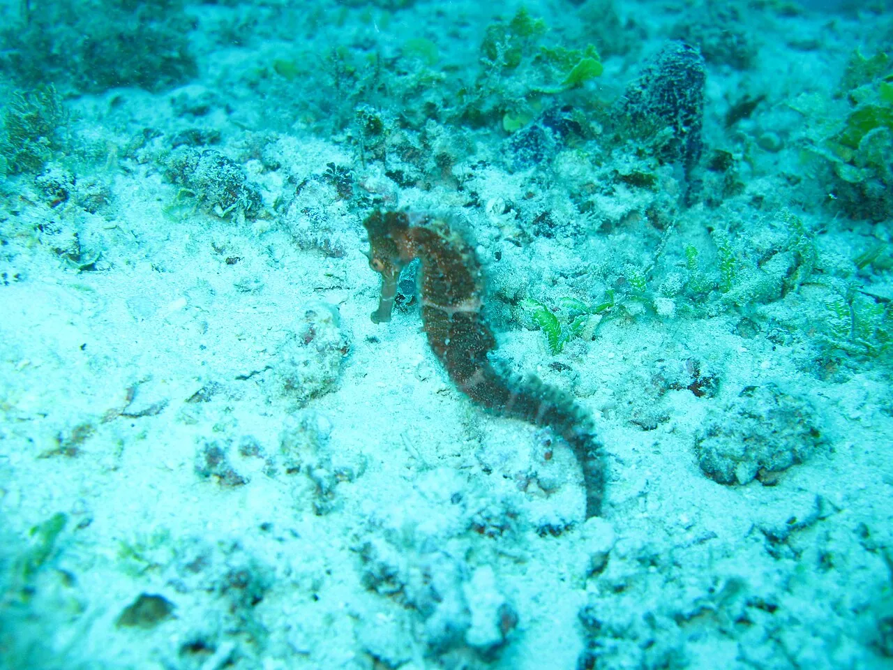

Atoll de Mnemba
Zanzibar, Tanzanie · snorkeling, plongée

Petit atoll protégé au nord-est de Zanzibar, fréquenté par les dauphins et les tortues. Une eau claire et chaude toute l’année.
- Lieu
- Zanzibar, Tanzanie
- Niveau
- Débutant
- Activités
- snorkeling, plongée
- Type d'eau
- Mer / océan
- Coordonnées
- -5.82, 39.38 (position approximative du secteur)
Dangers à connaître
- Courants sur le tombant.
- Nombreux bateaux en matinée.
Le conseil d'Ocean Buddy
Choisis un opérateur qui ne poursuit pas les dauphins avec son bateau.
Ouvrir dans Ocean Buddy Télécharger sur l'App Store
Source : Fiche Ocean Buddy · septembre 2026 · à vérifier localement.